Chapter 6: Book VI. Application of the Theory of Proportion¶
6.1 Book VI. Application of the Theory of Proportion¶
________________
DEFINITIONS.
i. Similar Rectilineal Figures are those whose several angles are equal, each to each, and whose sides about the equal angles are proportional.
Similar figures agree in shape; if they agree also in size, they are congruent.
1. When the shape of a figure is given, it is said to be given in species. Thus a triangle whose angles are given is given in species. Hence similar figures are of the same species.
2. When the size of a figure is given, it is said to be given in magnitude; for instance, a square whose side is of given length.
3. When the place which a figure occupies is known, it is said to be given in position.
ii. A right line is said to be cut at a point in extreme and mean ratio when the whole line is to the greater segment as the greater segment is to the less.
iii. If three quantities of the same kind be in continued proportion, the middle term is called a mean proportional between the other two.
Magnitudes in continued proportion are also said to be in geometrical progression.
iv. If four quantities of the same kind be in continued proportion, the two middle terms are called two mean proportionals between the other two.
v. The altitude of any figure is the length of the perpendicular from its highest point to its base.
vi. Two corresponding angles of two figures have the sides about them reciprocally proportional, when a side of the first is to a side of the second as the remaining side of the second is to the remaining side of the first.
This is evidently equivalent to saying that a side of the first is to a side of the second in the reciprocal ratio of the remaining side of the first to the remaining side of the second.
PROP. I.—Theorem.
Triangles (ABC, ACD) and parallelograms (EC, CF) which have the same altitude are to one another as their bases (BC, CD).
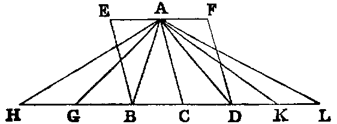
Dem.—Produce BD both ways, and cut off any number of parts BG, GH, &c., each equal to CB, and any number DK, KL, each equal to CD. Join AG, AH, AK, AL.
Now, since the several bases CB, BG, GH are all equal, the triangles ACB, ABG, AGH are also all equal [I. xxxviii.]. Therefore the triangle ACH is the same multiple of ACB that the base CH is of the base CB. In like manner, the triangle ACL is the same multiple of ACD that the base CL is of the base CD; and it is evident that [I. xxxviii.] if the base HC be greater than CL, the triangle HAC is greater than CAL; if equal, equal; and if less, less. Now we have four magnitudes: the base BC is the first, the base CD the second, the triangle ABC the third, and the triangle ACD the fourth. We have taken equimultiples of the first and third, namely, the base CH, and the triangle ACH; also equimultiples of the second and fourth, namely, the base CL, and the triangle ACL; and we have proved that according as the multiple of the first is greater than, equal to, or less than the multiple of the second, the multiple of the third is greater than, equal to, or less than the multiple of the fourth. Hence [V. Def. v.] the base BC : CD :: the triangle ABC : ACD.
2. The parallelogram EC is double of the triangle ABC [I. xxxiv.], and the parallelogram CF is double of the triangle ACD. Hence [V. xv.] EC : CF :: the triangle ABC : ACD; but ABC : ACD :: BC : CD (Part I.). Therefore [V. xi.] EC : CF :: the base BC : CD.
Or thus: Let A, A′ denote the areas of the triangles ABC, ACD, respectively, and P their common altitude; then [II. i., Cor. 1],
| A = P.BC, A′ = P.CD. | |||||||||||
|---|---|---|---|---|---|---|---|---|---|---|---|
| Hence | 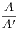 =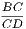 , or A : A′ :: BC : CD. |
In extending this proof to parallelograms we have only to use P instead of P.
PROP. II.—Theorem.
If a line (DE) be parallel to a side (BC) of a triangle (ABC), it divides the remaining sides, measured from the opposite angle (A), proportionally; and, conversely, If two sides of a triangle, measured from an angle, be cut proportionally, the line joining the points of section is parallel to the third side.
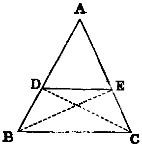
1. It is required to prove that AD : DB :: AE : EC.
Dem.—Join BE, CD. The triangles BDE, CED are on the same base DE, and between the same parallels BC, DE. Hence [I. xxxvii.] they are equal, and therefore [V. vii.] the triangle ADE : BDE :: ADE : CDE;
| but | ADE | : BDE :: AD : DB [i.], | |||||||||
|---|---|---|---|---|---|---|---|---|---|---|---|
| and | ADE | : CDE :: AE : EC [i.]. | |||||||||
| Hence | AD | : DB :: AE : EC. |
2. If AD : DB :: AE : EC, it is required to prove that DE is parallel to BC.
Dem.—Let the same construction be made;
| then | AD : DB :: the triangle ADE : BDE [i.]. | ||||||||||
|---|---|---|---|---|---|---|---|---|---|---|---|
| and | AE : EC :: the triangle ADE : CDE [i.]; | ||||||||||
| but | AD : DB :: AE : EC (hyp.). | ||||||||||
| Hence | ADE : BDE :: ADE : CDE. |
Therefore [V. ix.] the triangle BDE is equal to CDE, and they are on the same base DE, and on the same side of it; hence they are between the same parallels [I. xxxix.]. Therefore DE is parallel to BC.
Observation.—The line DE may cut the sides AB, AC produced through B, C, or through the angle A; but evidently a separate figure for each of these cases is unnecessary.
Exercise.
If two lines be cut by three or more parallels, the intercepts on one are proportional to the corresponding intercepts on the other.
PROP. III.—Theorem.
If a line (AD) bisect any angle (A) of a triangle (ABC), it divides the opposite side (BC) into segments proportional to the adjacent sides. Conversely, If the segments (BD, DC) into which a line (AD) drawn from any angle (A) of a triangle divides the opposite side be proportional to the adjacent sides, that line bisects the angle (A).
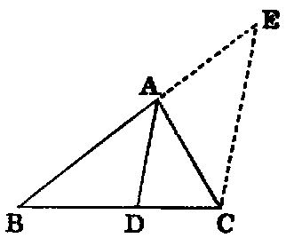
Dem.—1. Through C draw CE parallel to AD, to meet BA produced in E. Because BA meets the parallels AD, EC, the angle BAD [I. xxix.] is equal to AEC; and because AC meets the parallels AD, EC, the angle DAC is equal to ACE; but the angle BAD is equal to DAC (hyp.); therefore the angle ACE is equal to AEC; therefore AE is equal to AC [I. vi.]. Again, because AD is parallel to EC, one of the sides of the triangle BEC, BD : DC :: BA : AE [ii.]; but AE has been proved equal to AC. Therefore BD : DC :: BA : AC.
2. If BD : DC :: BA : AC, the angle BAC is bisected.
Dem.—Let the same construction be made.
Because AD is parallel to EC, BA : AE :: BD : DC [ii.]; but BD : DC :: BA : AC (hyp.). Therefore [V. xi.] BA : AE :: BA : AC, and hence [V. ix.] AE is equal to AC; therefore the angle AEC is equal to ACE; but AEC is equal to BAD [I. xxix.], and ACE to DAC; hence BAD is equal to DAC, and the line AD bisects the angle BAC.
Exercises.
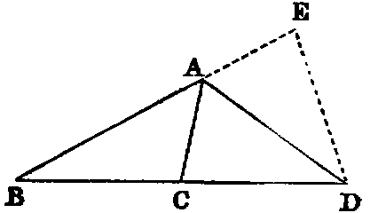
1. If the line AD bisect the external vertical angle CAE, BA : AC :: BD : DC, and conversely.
Dem.—Cut off AE = AC. Join ED. Then the triangles ACD, AED are evidently congruent; therefore the angle EDB is bisected; hence [iii.] BA : AE :: BD : DE; or BA : AC :: BD : DC.
2. Exercise 1 has been proved by quoting Proposition iii. Prove it independently, and prove iii. as an inference from it.
3. The internal and the external bisectors of the vertical angle of a triangle divide the base harmonically (see Definition, p. 191).
4. Any line intersecting the legs of any angle is cut harmonically by the internal and external bisectors of the angle.
5. Any line intersecting the legs of a right angle is cut harmonically by any two lines through its vertex which make equal angles with either of its sides.
6. If the base of a triangle be given in magnitude and position, and the ratio of the sides, the locus of the vertex is a circle which divides the base harmonically in the ratio of the sides.
7. If a, b, c denote the sides of a triangle ABC, and D, D′ the points where the internal and external bisectors of A meet BC; prove
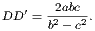
8. In the same case, if E, E′, F, F′ be points similarly determined on the sides CA, AB, respectively; prove
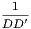 +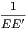 +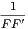 = 0, |
|||
|---|---|---|---|
| and | 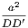 +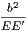 +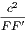 = 0. |
PROP. IV.—Theorem.
The sides about the equal angles of equiangular triangles (BAC, CDE) are proportional, and those which are opposite to the equal angles are homologous.
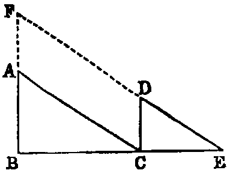
Dem.—Let the sides BC, CE, which are opposite to the equal angles A and D, be conceived to be placed so as to form one continuous line, the triangles being on the same side, and so that the equal angles BCA, CED may not have a common vertex.
Now, the sum of the angles ABC, BCA is less than two right angles; but BCA is equal to BED (hyp.). Therefore the sum of the angles ABE, BED is less than two right angles; hence [I., Axiom xii.] the lines AB, ED will meet if produced. Let them meet in F. Again, because the angle BCA is equal to BEF, the line CA [I. xxviii.] is parallel to EF. In like manner, BF is parallel to CD; therefore the figure ACDF is a parallelogram; hence AC is equal to DF, and CD is equal to AF. Now, because AC is parallel to FE, BA : AF :: BC : CE [ii.]; but AF is equal to CD, therefore BA : CD :: BC : CE; hence [V. xvi.]; AB : BC :: DC : CE. Again, because CD is parallel to BF, BC : CE :: FD : DE; but FD is equal to AC, therefore BC : CE :: AC : DE; hence [V. xvi.] BC : AC :: CE : DE. Therefore we have proved that AB : BC :: DC : CE, and that BC : CA :: CE : ED. Hence (ex aequali) AB : AC :: DC : DE. Therefore the sides about the equal angles are proportional.
This Proposition may also be proved very simply by superposition. Thus (see fig., Prop. ii.): let the two triangles be ABC, ADE; let the second triangle ADE be conceived to be placed on ABC, so that its two sides AD, AE may fall on the sides AB, AC; then, since the angle ADE is equal to ABC, the side DE is parallel to BC. Hence [ii.] AD : DB :: AE : EC; hence AD : AB :: AE : AC, and [V. xvi.] AD : AE :: AB : AC. Therefore the sides about the equal angles BAC, DAE are proportional, and similarly for the others.
It can be proved by this Proposition that two lines which meet at infinity are parallel. For, let I denote the point at infinity through which the two given lines pass, and draw any two parallels intersecting them in the points A, B; A′, B′; then the triangles AIB, A′IB′ are equiangular; therefore AI : AB :: A′I : A′B′; but the first term of the proportion is equal to the third; therefore [V. xiv.] the second term AB is equal to the fourth A′B′, and, being parallel to it, the lines AA′, BB′ [I. xxxiii.] are parallel.
Exercises.
1. If two circles intercept equal chords AB, A′B′ on any secant, the tangents AT, A′T to the circles at the points of intersection are to one another as the radii of the circles.
2. If two circles intercept on any secant chords that have a given ratio, the tangents to the circles at the points of intersection have a given ratio, namely, the ratio compounded of the direct ratio of the radii and the inverse ratio of the chords.
3. Being given a circle and a line, prove that a point may be found, such that the rectangle of the perpendiculars let fall on the line from the points of intersection of the circle with any chord through the point shall be given.
4. AB is the diameter of a semicircle ADB; CD a perpendicular to AB; draw through A a chord AF of the semicircle meeting CD in E, so that the ratio CE : EF may be given.
PROP. V.–Theorem.
If two triangles (ABC, DEF) have their sides proportional (BA : AC :: ED : DF; AC : CB :: DF : FE) they are equiangular, and those angles are equal which are subtended by the homologous sides.
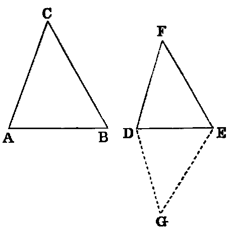
Dem.—At the points D, E make the angles EDG, DEG equal to the angles A, B of the triangle ABC. Then [I. xxxii.] the triangles ABC, DEG are equiangular.
| Therefore | BA : AC | :: ED : DG [iv.]; | |||||
|---|---|---|---|---|---|---|---|
| but | BA : AC | :: ED : DF (hyp.). |
Therefore DG is equal to DF. In like manner it may be proved that EG is equal to EF. Hence the triangles EDF, EDG have the sides ED, DF in one equal to the sides ED, DG in the other, and the base EF equal to the base EG. Hence [I. viii.] they are equiangular; but the triangle DEG is equiangular to ABC. Therefore the triangle DEF is equiangular to ABC.
Observation.—In VI. Def. i. two conditions are laid down as necessary for the similitude of rectilineal figures. 1. The equality of angles; 2. The proportionality of sides. Now, from Propositions iv. and v., we see that if two triangles possess either condition, they also possess the other. Triangles are unique in this respect. In all other rectilineal figures one of the conditions may exist without the other. Thus, two quadrilaterals may have their sides proportional without having equal angles, or vice versâ.
PROP. VI.—Theorem.
If two triangles (ABC, DEF) have one angle (A) in one equal to one angle (D) in the other, and the sides about these angles proportional (BA : AC :: ED : DF), the triangles are equiangular, and have those angles equal which are opposite to the homologous sides.
Dem.—Make the same construction as in the last Proposition; then the triangles ABC, DEG are equiangular.
| Therefore | BA : AC | :: ED : DG [iv.]; | |||||||||
|---|---|---|---|---|---|---|---|---|---|---|---|
| but | BA : AC | :: ED : DF (hyp.). |
Therefore DG is equal to DF. Again, because the angle EDG is equal to BAC (const.), and BAC equal to EDF (hyp.), the angle EDG is equal to EDF; and it has been proved that DG is equal to DF, and DE is common; hence the triangles EDG and EDF are equiangular; but EDG is equiangular to BAC. Therefore EDF is equiangular to BAC.
[It is easy to see, as in the case of Proposition iv., that an immediate proof of this Proposition can also be got from Proposition ii.].
Cor. 1.—If the ratio of two sides of a triangle be given, and the angle between them, the triangle is given in species.
PROP. VII.—Theorem.
If two triangles (ABC, DEF) have one angle (A) one equal to one angle (D) in the other, the sides about two other angles (B, E) proportional (AB : BC :: DE : EF), and the remaining angles (C, F) of the same species (i. e. either both acute or both not acute), the triangles are similar.
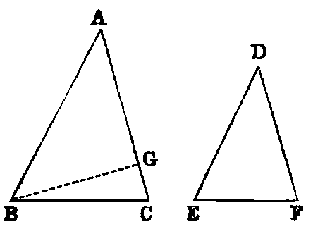
Dem.—If the angles B and E are not equal, one must be greater than the other. Suppose ABC to be the greater, and that the part ABG is equal to DEF, then the triangles ABG, DEF have two angles in one equal to two angles in the other, and are [I. xxxii.] equiangular.
| Therefore | AB : BG | :: DE : EF [iv.]; | |||||
|---|---|---|---|---|---|---|---|
| but | AB : BC | :: DE : EF (hyp.). |
Therefore BG is equal to BC. Hence the angles BCG, BGC must be each acute [I. xvii.]; therefore AGB must be obtuse; hence DFE, which is equal to it, is obtuse; and it has been proved that ACB is acute; therefore the angles ACB, DFE are of different species; but (hyp.) they are of the same species, which is absurd. Hence the angles B and E are not unequal, that is, they are equal. Therefore the triangles are equiangular.
Cor. 1.—If two triangles ABC, DEF have two sides in one proportional to two sides in the other, AB : BC :: DE : EF, and the angles A, D opposite one pair of homologous sides equal, the angles C, F opposite the other are either equal or supplemental. This Proposition is nearly identical with vii.
Cor. 2.—If either of the angles C, F be right, the other must be right.
PROP. VIII.—Theorem.
The triangles (ACD, BCD) into which a right-angled triangle (ACB) is divided, by the perpendicular (CD) from the right angle (C) on the hypotenuse, are similar to the whole and to one another.
Dem.—Since the two triangles ADC, ACB have the angle A common, and the angles ADC, ACB equal, each being right, they are [I. xxxii.] equiangular; hence [iv.] they are similar. In like manner it may be proved that BDC is similar to ABC. Hence ADC, CDB are each similar to ACD, and therefore they are similar to one another.
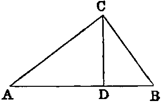
Cor. 1.—The perpendicular CD is a mean proportional between the segments AD, DB of the hypotenuse.
For, since the triangles ADC, CDB are equiangular, we have AD : DC :: DC : DB; hence DC is a mean proportional between AD, DB (Def. iii.).
Cor. 2.—BC is a mean proportional between AB, BD; and AC between AB, AD.
Cor. 3.—The segments AD, DB are in the duplicate of AC : CB, or in other words, AD : DB :: AC2 : CB2,
Cor. 4.—BA : AD in the duplicate ratios of BA : AC; and AB : BD in the duplicate ratio of AB : BC.
PROP. IX.—Problem.
From a given right line (AB) to cut off any part required (i.e. to cut off any required submultiple)
.
Sol.—Let it be required, for instance, to cut off the fourth part. Draw AF, making any angle with AB, and in AF take any point C, and cut off (I. iii.) the parts CD, DE, EF each equal to AC. Join BF, and draw CG parallel to BF. AG is the fourth part of AB.
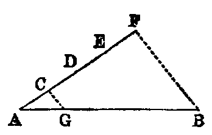
Dem.—Since CG is parallel to the side BF of the triangle ABF, AC : AF :: AG : AB [ii.]; but AC is the fourth part of AF (const.). Hence AG is the fourth part of AB [V., d.]. In the same manner, any other required submultiple may be cut off.
Proposition x., Book I., is a particular case of this Proposition.
PROP. X.—Problem.
To divide a given undivided line (AB) similarly to a given divided line (CD).
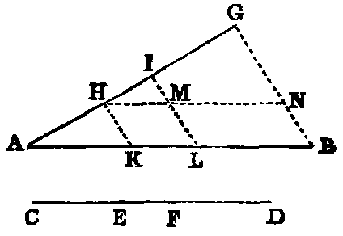
Sol.—Draw AG, making any angle with AB, and cut off the parts AH, HI, IG respectively equal to the parts CE, EF, FD of the given divided line CD. Join BG, and draw HK, IL, each parallel to BG. AB will be divided similarly to CD.
Dem.—Through H draw HN parallel to AB, cutting IL in M. Now in the triangle ALI, HK is parallel to IL. Hence [ii.] AK : KL :: AH : HI, that is :: CE : EF (const.). Again, in the triangle HNG, MI is parallel to NG. Therefore [ii.] HM : MN :: HI : IG; but [I. xxxiv.] HM is equal to KL, MN is equal to LB, HI is equal to EF, and IG is equal to FD (const.). Therefore KL : LB :: EF : FD. Hence the line AB is divided similarly to the line CD.
Exercises.
1. To divide a given line AB internally or externally in the ratio of two given lines, m, n.
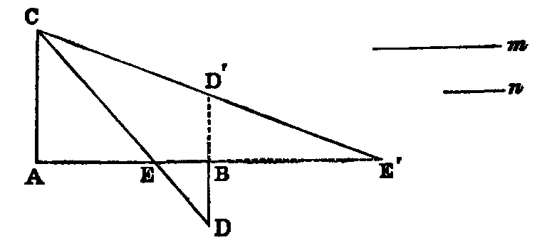
Sol.—Through A and B draw any two parallels AC and BD in opposite directions. Cut off AC = m, and BD = n, and join CD; the joining line will divide AB internally at E in the ratio of m : n.
2. If BD′ be drawn in the same direction with AC, as denoted by the dotted line, then CD′ will cut AB externally at E′ in the ratio of m : n.
Cor.—The two points E, E′ divide AB harmonically.
This problem is manifestly equivalent to the following:—Given the sum or difference of two lines and their ratio, to find the lines.
3. Any line AE′, through the middle point B of the base DD′ of a triangle DCD′, is cut harmonically by the sides of the triangle and a parallel to the base through the vertex.
4. Given the sum of the squares on two lines and their ratio; find the lines.
5. Given the difference of the squares on two lines and their ratio; find the lines.
6. Given the base and ratio of the sides of a triangle; construct it when any of the following data is given:—1, the area; 2, the difference on the squares of the sides; 3, the sum of the squares on the sides; 4, the vertical angle; 5, the difference of the base angles.
PROP. XI.—Problem.
To find a third proportional to two given lines (X, Y ).
Sol.—Draw any two lines AC, AE making an angle. Cut off AB equal X, BC equal Y , and AD equal Y . Join BD, and draw CE parallel to BD, then DE is the third proportional required.
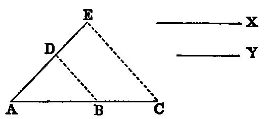
Dem.—In the triangle CAE, BD is parallel to CE; therefore AB : BC :: AD : DE [ii.]; but AB is equal to X, and BC, AD each equal to Y . Therefore X : Y :: Y : DE. Hence DE is a third proportional to X and Y .
Another solution can be inferred from Proposition viii. For if AD, DC in that Proposition be respectively equal to X and Y , then DB will be the third proportional. Or again, if in the diagram, Proposition viii., AD = X, and AC = Y , AB will be the third proportional. Hence may be inferred a method of continuing the proportion to any number of terms.
Exercises.
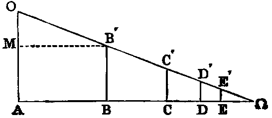
1. If AOΩ be a triangle, having the side AΩ greater than AO; then if we cut off AB = AO, draw BB′ parallel to AO, cut off BC = BB′, &c., the series of lines AB, BC, CD, &c., are in continual proportion.
2. AB − BC : AB :: AB : AΩ. This is evident by drawing through B′ a parallel to AΩ.
PROP. XII.—Problem.
To find a fourth proportional to three given lines (X, Y, Z).
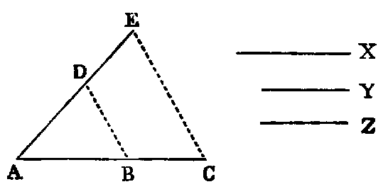
Sol.—Draw any two lines AC, AE, making an angle; then cut off AB equal X, BC equal Y , AD equal Z. Join BD, and draw CE parallel to BD. DE will be the fourth proportional required.
Dem.—Since BD is parallel to CE, we have [ii.] AB : BC :: AD : DE; therefore X : Y :: Z : DE. Hence DE is a fourth proportional to X, Y , Z.
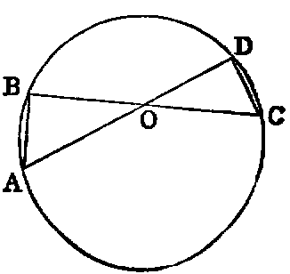
Or thus: Take two lines AD, BC intersecting in O. Make OA = X, OB = Y , OC = Z, and describe a circle through the points A, B, C [IV. v.] cutting AD in D. OD will be the fourth proportional required.
The demonstration is evident from the similarity of the triangles AOB and COD.
PROP. XIII.—Problem.
To find a mean proportional between two given lines. (X, Y ).
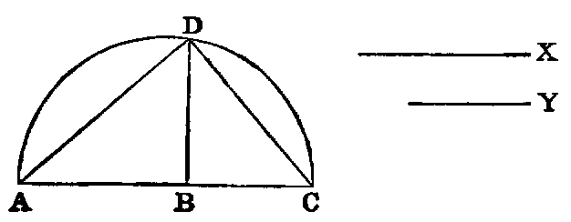
Sol.—Take on any line AC parts AB, BC respectively equal to X, Y . On AC describe a semicircle ADC. Erect BD at right angles to AC, meeting the semicircle in D. BD will be the mean proportional required.
Dem.—Join AD, DC. Since ADC is a semicircle, the angle ADC is right [III. xxxi.]. Hence, since ADC is a right-angled triangle, and BD a perpendicular from the right angle on the hypotenuse, BD is a mean proportional [viii. Cor. 1] between AB, BC; that is, BD is a mean proportional between X and Y .
Exercises.
1. Another solution may be inferred from Proposition viii., Cor. 2.
2. If through any point within a circle the chord be drawn, which is bisected in that point, its half is a mean proportional between the segments of any other chord passing through the same point.
3. The tangent to a circle from any external point is a mean proportional between the segments of any secant passing through the same point.
4. If through the middle point C of any arc of a circle any secant be drawn cutting the chord of the arc in D, and the circle again in E, the chord of half the arc is a mean proportional between CD and CE.
5. If a circle be described touching another circle internally and two parallel chords, the perpendicular from the centre of the former on the diameter of the latter, which bisects the chords, is a mean proportional between the two extremes of the three segments into which the diameter is divided by the chords.
6. If a circle be described touching a semicircle and its diameter, the diameter of the circle is a harmonic mean between the segments into which the diameter of the semicircle is divided at the point of contact.
7. State and prove the Proposition corresponding to Ex. 5, for external contact of the circles.
PROP. XIV.—Theorem.
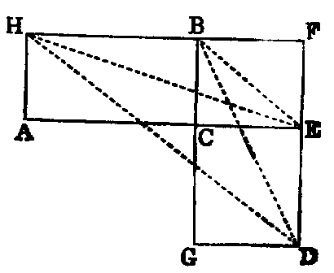
1. Equiangular parallelograms (AB, CD) which are equal in area have the sides about the equal angles reciprocally proportional—AC : CE :: GC : CB.
2. Equiangular parallelograms which have the sides about the equal angles reciprocally proportional are equal in area.
Dem.—Let AC, CE be so placed as to form one right line, and that the equal angles ACB, ECG may be vertically opposite. Now, since the angle ACB is equal to ECG, to each add BCE, and we have the sum of the angles ACB, BCE equal to the sum of the angles ECG, BCE; but the sum of ACB, BCE is [I. xiii.] two right angles. Therefore the sum of ECG, BCE is two right angles. Hence [I. xiv.] BC, CG form one right line. Complete the parallelogram BE.
Again, since the parallelograms AB, CD are equal (hyp.),
| AB : CF | :: CD : CF [V. vii.]; | ||||||||||
|---|---|---|---|---|---|---|---|---|---|---|---|
| but | AB : CF | :: AC : CE [i.]; | |||||||||
| and | CD : CF | :: GC : CB [i.]; | |||||||||
| therefore | AC : CE | :: GC : CB; |
that is, the sides about the equal angles are reciprocally proportional.
2. Let AC : CE :: GC : CB, to prove the parallelograms AB, CD are equal.
Dem.—Let the same construction be made, we have
| AB : CF :: | AC : CE [i.]; | ||||||||||
|---|---|---|---|---|---|---|---|---|---|---|---|
| and | CD : CF :: | GC : CB [i.]; | |||||||||
| but | AC : CE :: | GC : CB (hyp.). | |||||||||
| Therefore | AB : CF :: | CD : CF. | |||||||||
| Hence | AB | = CD [V. ix.]; |
that is, the parallelograms are equal.
Or thus: Join HE, BE, HD, BD. The HC = twice the △ HBE, and the CD = twice the △ BDE. Therefore the △ HBE = BDE, and [I. xxxix.] HD is parallel to BE. Hence
2. May be proved by reversing this demonstration.
Another demonstration of this Proposition may be got by producing the lines HA and DG to meet in I. Then [I. xliii.] the points I, C, F are collinear, and the Proposition is evident.
PROP. XV.—Theorem.
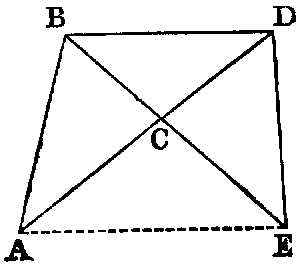
1. Two triangles equal in area (ACB, DCE), which have one angle (C) in one equal to one angle (C) in the other, have the sides about these angles reciprocally proportional.
2. Two triangles, which have one angle in one equal to one angle in the other, and the sides about these angles reciprocally proportional, are equal in area.
Dem.—1. Let the equal angles be so placed as to be vertically opposite, and that AC, CD may form one right line; then it may be demonstrated, as in the last Proposition, that BC, CE form one right line. Join BD.
Now since the triangles ACB, DCE are equal,
| ACB | : BCD :: DCE : BCD [V. vii.]; | ||||||||||
|---|---|---|---|---|---|---|---|---|---|---|---|
| but | ACB | : BCD :: AC : CD [i.], | |||||||||
| and | DCE | : BCD :: EC : CB [i.]. | |||||||||
| Therefore | AC | : CD :: EC : CB; |
that is, the sides about the equal angles are reciprocally proportional.
2. If AC : CD :: EC : CB, to prove the triangle ACB equal to DCE.
Dem.—Let the same construction be made, then we have
| AC : CD | :: triangle ACB : BCD [i.], | ||||||||||
|---|---|---|---|---|---|---|---|---|---|---|---|
| and | EC : CB | :: triangle DCE : BCD [i.]; | |||||||||
| but | AC : CD | :: EC : CB (hyp.). |
Therefore the triangle
Hence the triangle ACB = DCE [V. ix.]—that is, the triangles are equal.
This Proposition might have been appended as a Cor. to the preceding, since the triangles are the halves of equiangular parallelograms, or it may be proved by joining AE, and showing that it is parallel to BD.
PROP. XVI.—Theorem.
1. If four right lines (AB, CD, E, F) be proportional, the rectangle (AB.F) contained by the extremes is equal to the rectangle (CD.E) contained by the means.
2. If the rectangle contained by the extremes of four right lines be equal to the rectangle contained by the means, the four lines are proportional.
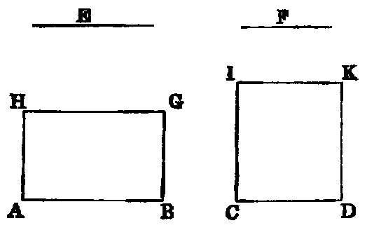
Dem.—1. Erect AH, CI at right angles to AB and CD, and equal to F and E respectively, and complete the rectangles. Then because AB : CD :: E : F (hyp.), and that E is equal to CI, and F to AH (const.), we have AB : CD :: CI : AH. Hence the parallelograms AG, CK are equiangular, and have the sides about their equal angles reciprocally proportional. Therefore they are [xiv.] equal; but since AH is equal to F, AG is equal to the rectangle AB.F. In like manner, CK is equal to the rectangle CD.E. Hence AB.F = CD.E; that is, the rectangle contained by the extremes is equal to the rectangle contained by the means.
2. If AB.F = CD.E, to prove AB : CD :: E : F.
The same construction being made, because AB.F = CD.E, and that F is equal to AH, and E to CI, we have the parallelogram AG = CK; and since these parallelograms are equiangular, the sides about their equal angles are reciprocally proportional. Therefore
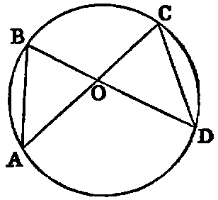
Or thus: Place the four lines in a concurrent position so that the extremes may form one continuous line, and the means another. Let the four lines so placed be AO, BO, OD, OC. Join AB, CD. Then because AO : OB :: OD : OC, and the angle AOB = DOC, the triangles AOB, COD are equiangular. Hence the four points A, B, C, D are concyclic. Therefore [III. xxxv.] AO.OC = BO.OD.
PROP. XVII.—Theorem
1. If three right lines (A, B, C) be proportional, the rectangle (A.C) contained by the extremes is equal to the square (B2) of the mean.
2. If the rectangle contained by the extremes of three right lines be equal to the square of the mean, the three lines are proportional.
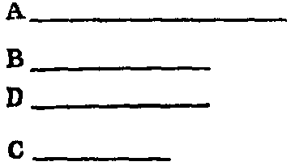
Dem.—1. Assume a line D = B; then because A : B :: B : C, we have A : B :: D : C. Therefore [xvi.] AC = BD; but BD = B2. Therefore AC = B2; that is, the rectangle contained by the extremes is equal to the square of the mean.
2. The same construction being made, since AC = B2, we have A.C = B.D; therefore A : B :: D : C; but D = B. Hence A : B :: B : C; that is, the three lines are proportionals.
This Proposition may be inferred as a Cor. to the last, which is one of the fundamental Propositions in Mathematics.
Exercises.
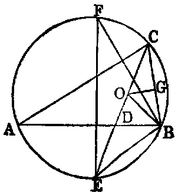
1. If a line CD bisect the vertical angle C of any triangle ACB, its square added to the rectangle AD.DB contained by the segments of the base is equal to the rectangle contained by the sides.
Dem.—Describe a circle about the triangle, and produce CD to meet it in E; then it is easy to see that the triangles ACD, ECB are equiangular. Hence [iv.] AC : CD :: CE : CB; therefore AC.CB = CE.CD = CD2 + CD.DE = CD2 + AD.DB [III. xxxv.].
2. If the line CD′ bisect the external vertical angle of any triangle ACB, its square subtracted from the rectangle AD′.D′B is equal to AC.CB.
3. The rectangle contained by the diameter of the circumscribed circle, and the radius of the inscribed circle of any triangle, is equal to the rectangle contained by the segments of any chord of the circumscribed circle passing through the centre of the inscribed.
Dem.—Let O be the centre of the inscribed circle. Join OB (see foregoing fig.); let fall the perpendicular OG, draw the diameter EF of the circumscribed circle. Now the angle ABE = ECB [III. xxvii.], and ABO = OBC; therefore EBO = sum of OCB, OBC = EOB. Hence EB = EO. Again, the triangles EBF, OGC are equiangular, because EFB, ECB are equal, and EBF, OGC are each right. Therefore, EF : EB :: OC : OG; therefore EF.OG = EB.OC = EO.OC.
4. Ex. 3 may be extended to each of the escribed circles of the triangle ACB.
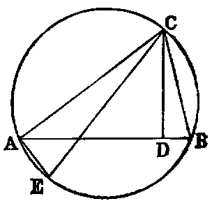
5. The rectangle contained by two sides of a triangle is equal to the rectangle contained by the perpendicular and the diameter of the circumscribed circle. For, let CE be the diameter. Join AE. Then the triangles ACE, DCB are equiangular; hence AC : CE :: CD : CB; therefore AC.CB = CD.CE.
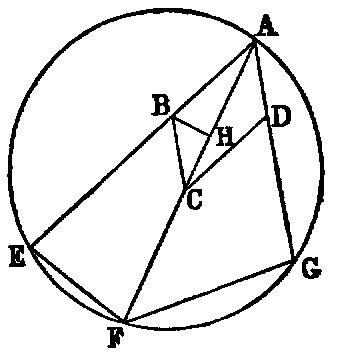
6. If a circle passing through one of the angles A of a parallelogram ABCD intersect the two sides AB, AD again in the points E, G and the diagonal AC again in F; then AB.AE + AD.AG = AC.AF.
Dem.—Join EF, FG, and make the angle ABH = AFE. Then the triangles ABH, AFE are equiangular. Therefore AB : AH :: AF : AE. Hence AB.AE = AF.AH. Again, it is easy to see that the triangles BCH, FAG are equiangular; therefore BC : CH :: AF : AG; hence BC.AG = AF.CH, or AD.AG = AF.CH; but we have proved AB.AE = AF.AH. Hence AD.AG + AB.AE = AF.AC.
7. If DE, DF be parallels to the sides of a triangle ABC from any point D in the base, then AB.AE + AC.AF = AD2 + BD.DC. This is an easy deduction from 6.
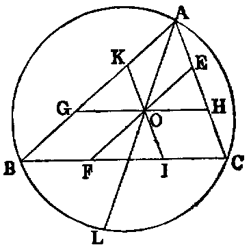
8. If through a point O within a triangle ABC parallels EF, GH, IK to the sides be drawn, the sum of the rectangles of their segments is equal to the rectangle contained by the segments of any chord of the circumscribing circle passing through O.
| Dem.—AO.AL = AB.AK + AC.AE. | (6) | |||||
|---|---|---|---|---|---|---|
| But | AO2 = AG.AK + AH.AE − GO.OH. | (7) | ||||
| Hence | AO.OL = BG.AK + CH.AE + GO.OH, | |||||
| or | AO.OL = EO.OF + IO.OK + GO.OH. |
9. The rectangle contained by the side of an inscribed square standing on the base of a triangle, and the sum of the base and altitude, is equal to twice the area of the triangle.
10. The rectangle contained by the side of an escribed square standing on the base of a triangle, and the difference between the base and altitude, is equal to twice the area of the triangle.
11. If from any point P in the circumference of a circle a perpendicular be drawn to any chord, its square is equal to the rectangle contained by the perpendiculars from the extremities of the chord on the tangent at P.
12. If O be the point of intersection of the diagonals of a cyclic quadrilateral ABCD, the four rectangles AB.BC, BD.CD, CD.DA, DA.AB, are proportional to the four lines BO, CO, DO, AO.
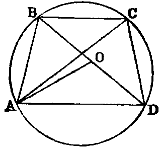
13. The sum of the rectangles of the opposite sides of a cyclic quadrilateral ABCD is equal to the rectangle contained by its diagonals.
Dem.—Make the angle DAO = CAB; then the triangles DAO, CAB are equiangular; therefore AD : DO :: AC : CB; therefore AD.BC = AC.DO. Again, the triangles DAC, OAB are equiangular, and CD : AC :: BO : AB; therefore AC.CD = AC.BO. Hence AD.BC+AB.CD = AC.BD.3 3This Proposition is known as Ptolemy’s theorem.
14. If the quadrilateral ABCD is not cyclic, prove that the three rectangles AB.CD, BC.AD, AC.BD are proportional to the three sides of a triangle which has an angle equal to the sum of a pair of opposite angles of the quadrilateral.
15. Prove by using Theorem 11 that if perpendiculars be let fall on the sides and diagonals of a cyclic quadrilateral, from any point in the circumference of the circumscribed circle, the rectangle contained by the perpendiculars on the diagonals is equal to the rectangle contained by the perpendiculars on either pair of opposite sides.
16. If AB be the diameter of a semicircle, and PA, PB chords from any point P in the circumference, and if a perpendicular to AB from any point C meet PA, PB in D and E, and the semicircle in F, CF is a mean proportional between CD and CE.
PROP. XVIII.—Problem.
On a given right line (AB) to construct a rectilineal figure similar to a given one (CDEFG), and similarly placed as regards any side (CD) of the latter.
Def.—Similar figures are said to be similarly described upon given right lines, when these lines are homologous sides of the figures.
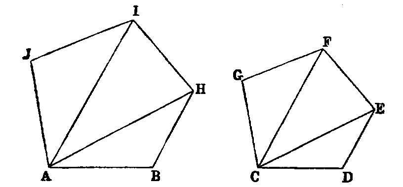
Sol.—Join CE, CF, and construct a triangle ABH on AB equiangular to CDE, and similarly placed as regards CD; that is, make, the angle ABH equal to CDE, and BAH equal to DCE. In like manner construct the triangle HAI equiangular to ECF, and similarly placed, and lastly, the triangle IAJ equiangular and similarly placed with FCG. Then ABHIJ is the figure required.
Dem.—From the construction it is evident that the figures are equiangular, and it is only required to prove that the sides about the equal angles are proportional. Now because the triangle ABH is equiangular to CDE, AB : BH :: CD : DE [iv.]; hence the sides about the equal angles B and D are proportional. Again, from the same triangles we have BH : HA :: DE : EC, and from the triangles IHA, FEC; HA : HI :: EC : EF; therefore (ex æquali) BH : HI :: DE : EF; that is, the sides about the equal angles BHI, DEF are proportional, and so in like manner are the sides about the other equal angles. Hence (Def. i.) the figures are similar.
Observation.—In the foregoing construction, the line AB is homologous to CD, and it is evident that we may take AB to be homologous to any other side of the given figure CDEFG. Again, in each case, it the figure ABHIJ be turned round the line AB until it falls on the other side, it will still be similar to the figure CDEFG. Hence on a given line AB there can be constructed two figures each similar to a given figure CDEFG, and having the given line AB homologous to any given side CD of the given figure.
The first of the figures thus constructed is said to be directly similar, and the second inversely similar to the given figure. These technical terms are due to Hamilton: see “Elements of Quaternions,” page 112.
Cor. 1.—Twice as many polygons may be constructed on AB similar to a given polygon CDEFG as that figure has sides.
Cor. 2.—If the figure ABHIJ be applied to CDEFG so that the point A will coincide with C, and that the line AB may be placed along CD, then the points H, I, J will be respectively on the lines CE, CF, CG; also the sides BH, HI, IJ of the one polygon will be respectively parallel to their homologous sides DE, EF, FG of the other.
Cor. 3.—If lines drawn from any point O in the plane of a figure to all its angular points be divided in the same ratio, the lines joining the points of division will form a new figure similar to, and having every side parallel to, the homologous side of the original.
PROP. XIX.—Theorem.
Similar triangles (ABC, DEF) have their areas to one another in the duplicate ratio of their homologous sides.
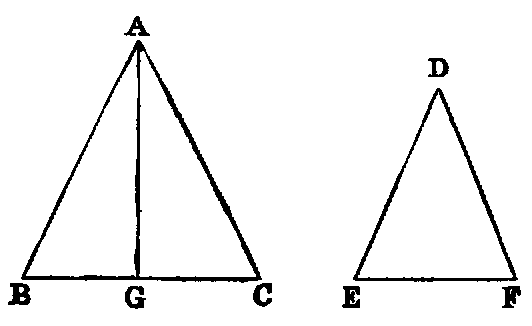
Dem.—Take BG a third proportional to BC, EF [xi.]. Join AG. Then because the triangles ABC, DEF are similar, AB : BC :: DE : EF; hence (alternately) AB : DE :: BC : EF; but BC : EF :: EF : BG (const.); therefore [V. xi.] AB : DE :: EF : BG; hence the sides of the triangles ABG, DEF about the equal angles B, E are reciprocally proportional; therefore the triangles are equal. Again, since the lines BC, EF, BG are continual proportionals, BC : BG in the duplicate ratio of BC : EF [V. Def. x.]; but BC : BG :: triangle ABC : ABG. Therefore ABC : ABG in the duplicate ratio of BC : EF; but it has been proved that the triangle ABG is equal to DEF. Therefore the triangle ABC is to the triangle DEF in the duplicate ratio of BC : EF.
This is the first Proposition in Euclid in which the technical term “duplicate ratio” occurs. My experience with pupils is, that they find it very difficult to understand either Euclid’s proof or his definition. On this account I submit the following alternative proof, which, however, makes use of a new definition of the duplicate ratio of two lines, viz. the ratio of the squares (see Annotations on V. Def. x.) described on these lines.
On AB and DE describe squares, and through C and F draw lines parallel to AB and DE, and complete the rectangles AI, DN.
Now, the triangles JAC, ODF are evidently equiangular.
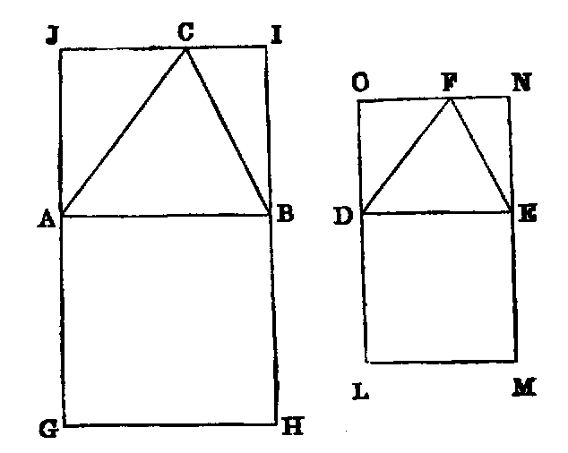
| Hence | JA | : AC :: OD : DF [iv.]; | |||||||||
|---|---|---|---|---|---|---|---|---|---|---|---|
| but | AC | : AB :: DF : DE [iv.]. | |||||||||
| Hence | JA | : AB :: OD : DE (ex æquali); | |||||||||
| but | AB | = AG, and DE = DL; | |||||||||
| therefore | JA | : AG :: OD : DL. | |||||||||
| Again, | JA | : AG :: AI : square AH [i.], | |||||||||
| and | OD | : DL :: DN : square DM [i.]. | |||||||||
| Hence | AI | : AH :: DN : DM; | |||||||||
| therefore | AI | : DN :: AH : DM [V. xvi.]; | |||||||||
| hence | △ABC : △DEF :: AB2 : DE2. |
Exercises.
1. If one of two similar triangles has its sides 50 per cent. longer than the homologous sides of the other; what is the ratio of their areas?
2. When the inscribed and circumscribed regular polygons of any common number of sides to a circle have more than four sides, the difference of their areas is less than the square of the side of the inscribed polygon.
PROP. XX.—Theorem.
Similar polygons may be divided (1) into the same number of similar triangles; (2) the corresponding triangles have the same ratio to one another which the polygons have; (3) the polygons are to each other in the duplicate ratio of their homologous sides.
Dem.—Let ABHIJ, CDEFG be the polygons, and let the sides AB, CD be homologous. Join AH, AI, CE, CF.
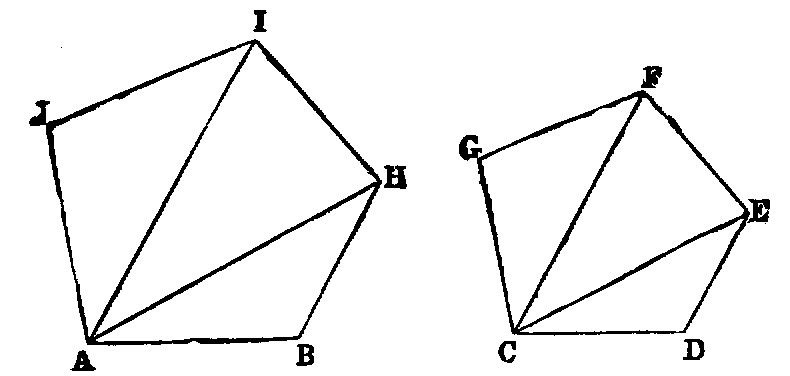
1. The triangles into which the polygons are divided are similar. For, since the polygons are similar, they are equiangular, and have the sides about their equal angles proportional [Def. i.]; hence the angle B is equal to D, and AB : BH :: CD : DE; therefore [vi.] the triangle ABH is equiangular to CDE; hence the angle BHA is equal to DEC; but BHI is equal to DEF (hyp.); therefore the angle AHI is equal to CEF. Again, because the polygons are similar, IH : HB :: FE : ED; and since the triangles ABH, CDE are similar, HB : HA :: ED : EC; hence (ex aequali) IH : HA :: FE : EC, and the angle IHA has been proved to be equal to the angle FEC; therefore the triangles IHA, FEC are equiangular. In the same manner it can be proved that the remaining triangles are equiangular.
2. Since the triangle ABH is similar to CDE, we have [xix.].
In like manner,
| AHI : CEF in the duplicate ratio of AH : CE; | |||||||
|---|---|---|---|---|---|---|---|
| hence | ABH : CDE | = AHI : CEF [V. xi.]. | |||||
| Similarly, | AHI : CEF | = AIJ : CFG. |
In these equal ratios, the triangles ABH, AHI, AIJ are the antecedents, and the triangles CDE, CEF, CFG the consequents, and [V. xii.] any one of these equal ratios is equal to the ratio of the sum of all the antecedents to the sum of all the consequents; therefore the triangle ABH : the triangle CDE :: the polygon ABHIJ : the polygon CDEFG.
3. The triangle ABH : CDE in the duplicate ratio of AB : CD [xix.]. Hence (2) the polygon ABHIJ : the polygon CDEFG in the duplicate ratio of AB : CD.
Cor. 1.—The perimeters of similar polygons are to one another in the ratio of their homologous sides.
Cor. 2.—As squares are similar polygons, therefore the duplicate ratio of two lines is equal to the ratio of the squares described on them (compare Annotations, V. Def. x.).
Cor. 3.—Similar portions of similar figures bear the same ratio to each other as the wholes of the figures.
Cor. 4.—Similar portions of the perimeters of similar figures are to each other in the ratio of the whole perimeters.
Exercises.
Def. i.—Homologous points in the planes of two similar figures are such, that lines drawn from them to the angular points of the two figures are proportional to the homologous sides of the two figures.
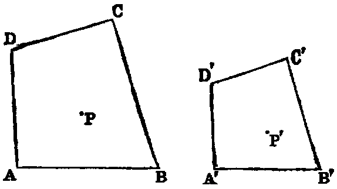
1. If two figures be similar, to each point in the plane of one there will be a corresponding point in the plane of the other.
Dem.—Let ABCD, A′B′C′D′ be the two figures, P a point in the plane of ABCD. Join AP, BP, and construct a triangle A′P′B′ on A′B′, similar to APB; then it is easy to see that lines from P′ to the angular points of A′B′C′D′ are proportional to the lines from P to the angular points of ABCD.
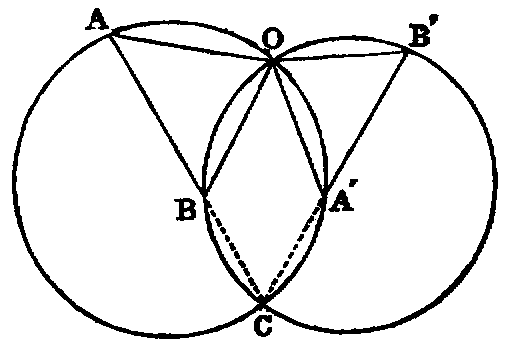
2. If two figures be directly similar, and in the same plane, there is in the plane a special point which, regarded as belonging to either figure, is its own homologous point with respect to the other. For, let AB, A′B′ be two homologous sides of the figures, C their point of intersection. Through the two triads of points A, A′, C; B, B′, C describe two circles intersecting again in the point O: O will be the point required. For it is evident that the triangles OAB, OA′B′ are similar and that either may be turned round the point O, so that the two bases, AB, A′B′, will be parallel.
Def. ii.—The point O is called the centre of similitude of the figures. It is also called their double point.
3. Two regular polygons of n sides each have n centres of similitude.
4. If any number of similar triangles have their corresponding vertices lying on three given lines, they have a common centre of similitude.
5. If two figures be directly similar, and have a pair of homologous sides parallel, every pair of homologous sides will be parallel.
Def. iii.—Two figures, such as those in 5, are said to be homothetic.
6. If two figures be homothetic, the lines joining corresponding angular points are concurrent, and the point of concurrence is the centre of similitude of the figures.
7. If two polygons be directly similar, either may be turned round their centre of similitude until they become homothetic, and this may be done in two different ways.
8. Two circles are similar figures.
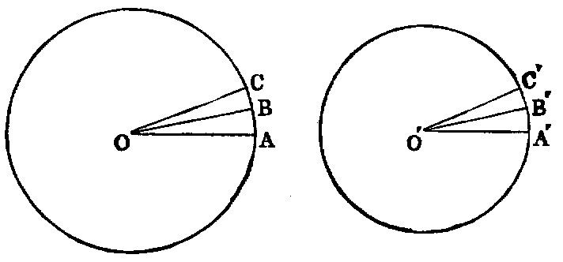
Dem.—Let O, O′ be their centres; let the angle AOB be indefinitely small, so that the arc AB may be regarded as a right line; make the angle A′O′B′ equal to AOB; then the triangles AOB, A′O′B′ are similar.
Again, make the angle BOC indefinitely small, and make B′O′C′ equal to it; the triangles BOC, B′O′C′ are similar. Proceeding in this way, we see that the circles can be divided into the same number of similar elementary triangles. Hence the circles are similar figures.
9. Sectors of circles having equal central angles are similar figures.
10. As any two points of two circles may be regarded as homologous, two circles have in consequence an infinite number of centres of similitude; their locus is the circle, whose diameter is the line joining the two points for which the two circles are homothetic.
11. The areas of circles are to one another as the squares of their diameters. For they are to one another as the similar elementary triangles into which they are divided, and these are as the squares of the radii.
12. The circumferences of circles are as their diameters (Cor. 1).
13. The circumference of sectors having equal central angles are proportional to their radii. Hence if a, a′ denote the arcs of two sectors, which subtend equal angles at the centres, and if r, r′ be their radii, =
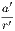
.14. The area of a circle is equal to half the rectangle contained by the circumference and the radius. This is evident by dividing the circle into elementary triangles, as in Ex. 8.
15. The area of a sector of a circle is equal to half the rectangle contained by the arc of the sector and the radius of the circle.
PROP. XXI.—Theorem.
Rectilineal figures (A, B), which are similar to the same figure (C), are similar to one another.
Dem.—Since the figures A and C are similar, they are equiangular, and have the sides about their equal angles proportional. In like manner B and C are equiangular, and have the sides about their equal angles proportional. Hence A and B are equiangular, and have the sides about their equal angles proportional. Therefore they are similar.
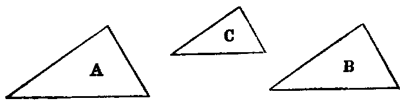
Cor.—Two similar rectilineal figures which are homothetic to a third are homothetic to one another.
Exercise.
If three similar rectilineal figures be homothetic, two by two, their three centres of similitudes are collinear.
PROP. XXII—Theorem.
If four lines (AB, CD, EF, GH) be proportional, and any pair of similar rectilineal figures (ABK, CDL) be similarly described on the first and second, and also any pair (EI, GJ) on the third and fourth, these figures are proportional. Conversely, if any rectilineal figure described on the first of four right lines: the similar and similarly described figure described on the second :: any rectilineal figure on the third : the similar and similarly described figure on the fourth, the four lines are proportional.
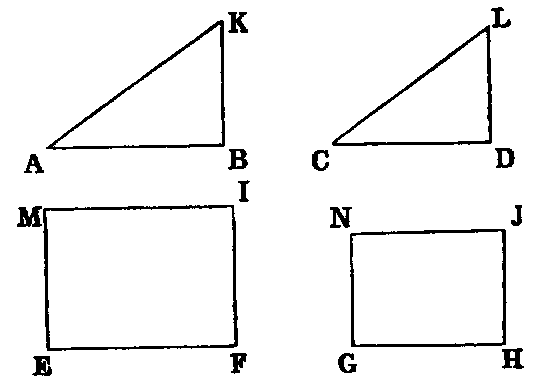
Dem. 1.—ABK : CDL :: AB2 : CD2. [xx.];
| and | EI | : GJ :: EF2 : GH2 [xx.]. | |||||||||
|---|---|---|---|---|---|---|---|---|---|---|---|
| But since | AB | : CD :: EF : GH, | |||||||||
| AB2 | : CD2 :: EF2 : GH2 [V. xxii., Cor. 1]; | ||||||||||
| therefore | ABK | : CDL :: EI : GJ. |
If ABK : CDL :: EI : GJ, AB : CD :: EF : GH.
| 3 Dem. 2.—ABK : CDL :: AB2 : CD2 [xx.], and EI : GJ :: EF2 : GH2 [xx.]; therefore AB2 : CD2 :: EF2 : GH2. Hence AB : CD :: EF : GH. | |||||||
|---|---|---|---|---|---|---|---|
The enunciation of this Proposition is wrongly stated in Simson’s Euclid, and in those that copy it. As given in those works, the four figures should be similar.
PROP. XXIII.—Theorem.
Equiangular parallelograms (AD, CG) are to each other as the rectangles contained by their sides about a pair of equal angles.
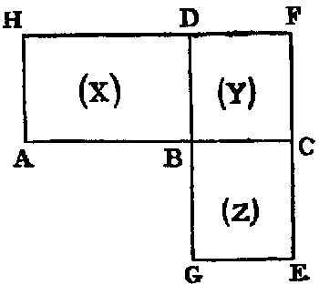
Dem.—Let the two sides AB, BC about the equal angles ABD, CBG, be placed so as to form one right line; then it is evident, as in Prop. xiv., that GB, BD form one right line. Complete the parallelogram BF. Now, denoting the parallelograms AB, BF, CG by X, Y , Z, respectively, we have—
| X | : Y :: AB : BC [i.], | ||||||||||
|---|---|---|---|---|---|---|---|---|---|---|---|
| Y | : Z :: BD : BG [i.]. | ||||||||||
| Hence | XY | : Y Z :: AB.BD : BC.BG; | |||||||||
| or | X | : Z :: AB.BD : BC.BG. |
Observation.—Since AB.BD : BC.BG is compounded of the two ratios AB : BC and BD : BG [V. Def. of compound ratio], the enunciation is the same as if we said, “in the ratio compounded of the ratios of the sides,” which is Euclid’s; but it is more easily understood as we have put it.
Exercises.
1. Triangles which have one angle of one equal or supplemental to one angle of the other, are to one another in the ratio of the rectangles of the sides about those angles.
2. Two quadrilaterals whose diagonals intersect at equal angles are to one another in the ratio of the rectangles of the diagonals.
PROP. XXIV.—Theorem.
In any parallelogram (AC), every two parallelograms (AF, FC) which are about a diagonal are similar to the whole and to one another.
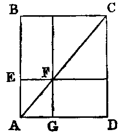
Dem.—Since the parallelograms AC, AF have a common angle, they are equiangular [I. xxxiv.], and all that is required to be proved is, that the sides about the equal angles are proportional. Now, since the lines EF, BC are parallel, the triangles AEF, ABC are equiangular; therefore [iv.] AE : EF :: AB : BC, and the other sides of the parallelograms are equal to AE, EF; AB, BC: hence the sides about the equal angles are proportional; therefore the parallelograms AF, AC are similar. In the same manner the parallelograms AF, FC are similar.
Cor.—The parallelograms AF, FC, AC are, two by two, homothetic.
PROP. XXV.—Problem.
To describe a rectilineal figure equal to a given one (A), and similar to another given one (BCD).
Sol.—On any side BC of the figure BCD describe the rectangle BE equal to BCD [I. xlv.], and on CE describe the rectangle EF equal to A. Between BC, CF find a mean proportional GH, and on it describe the figure GHI similar to BCD [xviii.], so that BC and GH may be homologous sides. GHI is the figure required.
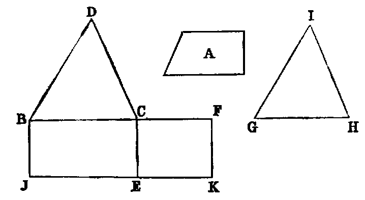
Dem.—The three lines BC, GH, CF are in continued proportion; therefore BC : CF in the duplicate ratio of BC : GH [V. Def. x.]; and since the figures BCD, GHI are similar, BCD : GHI in the duplicate ratio of BC : GH [xx.]; also BC : CF :: rectangle BE : rectangle EF. Hence rectangle BE : EF :: figure BCD : GHI; but the rectangle BE is equal to the figure BCD; therefore the rectangle EF is equal to the figure GHI; but EF is equal to A (const.). Therefore the figure GHI is equal to A, and it is similar to BCD. Hence it is the figure required.
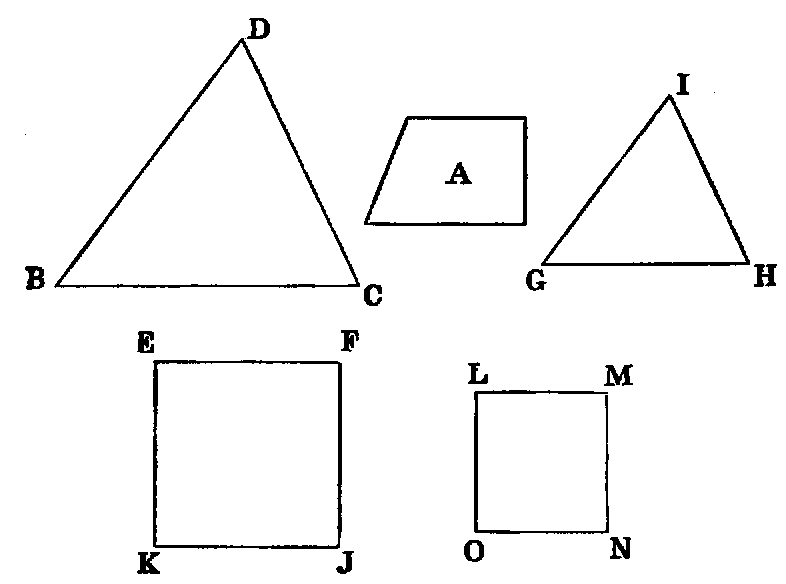
Or thus: Describe the squares EFJK, LMNO equal to the figures BCD and A respectively [II. xiv.]; then find GH a fourth proportional to EF, LM, and BC [xii.]. On GH describe the rectilineal figure GHI similar to the figure BCD [xviii.], so that BC and GH may be homologous sides. GHI is the figure required.
Dem.—Because EF : LM :: BC : GH (const.), the figure EFJK : LMNO :: BCD : GHI [xxii.]; but EFJK is equal to BCD (const.); therefore LMNO is equal to GHI; but LMNO is equal to A (const.). Therefore GHI is equal to A, and it is similar to BCD.
PROP. XXVI.—Theorem.
If two similar and similarly situated parallelograms (AEFG, ABCD) have a common angle, they are about the same diagonal.
Dem.—Draw the diagonals (see fig., Prop. xxiv.) AF, AC. Then because the parallelograms AEFG, ABCD are similar figures, they can be divided into the same number of similar triangles [xx.]. Hence the triangle FAG is similar to CAD, and therefore the angle FAG is equal to the angle CAD. Hence the line AC must pass through the point F, and therefore the parallelograms are about the same diagonal.
Observation.—Proposition xxvi., being the converse of xxiv., has evidently been misplaced. The following would be a simpler enunciation:—“If two homothetic parallelograms have a common angle, they are about the same diagonal.”
PROP. XXVII—Problem.
To inscribe in a given triangle (ABC) the maximum parallelogram having a common angle (B) with the triangle.
Sol.—Bisect the side AC opposite to the angle B, at P : through P draw PE, PF parallel to the other sides of the triangle. BP is the parallelogram required.
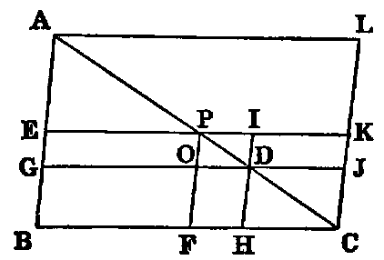
Dem.—Take any other point D in AC : draw DG, DH parallel to the sides, and CK parallel to AB; produce EP, GD to meet CK in K and J, and produce HD to meet PK in I.
Now, since AC is bisected in P, EK is also bisected in P; hence [I. xxxvi.] the parallelogram EO is equal to OK; therefore EO is greater than DK; but DK is equal to FD [I. xliii.]; hence EO is greater than FD. To each add BO, and we have the parallelogram BP greater than BD. Hence BP is the maximum parallelogram which can be inscribed in the given triangle.
Cor. 1.—The maximum parallelogram exceeds any other parallelogram about the same angle in the triangle, by the area of the similar parallelogram whose diagonal is the line between the middle point P of the opposite side and the point D, which is the corner of the other inscribed parallelogram.
Cor. 2.—The parallelograms inscribed in a triangle, and having one angle common with it, are proportional to the rectangles contained by the segments of the sides of the triangle, made by the opposite corners of the parallelograms.
Cor. 3.—The parallelogram AC : GH :: AC2 : AD.DC.
PROP. XXVIII.—Problem.
To inscribe in a given triangle (ABC) a parallelogram equal to a given rectilineal figure (X) not greater than the maximum inscribed parallelogram, and having an angle (B) common with the triangle.
Sol.—Bisect the side AC opposite to B, at P. Draw PF, PE parallel to the sides AB, BC; then [xxvii.] BP is the maximum parallelogram that can be inscribed in the triangle ABC; and if X be equal to it, the problem is solved. If not, produce EP, and draw CJ parallel to PF; then describe the parallelogram KLMN [xxv.] equal to the difference between the figure PJCF and X, and similar to PJCF, and so that the sides PJ and KL will be homologous; then cut off PI equal to KL; draw IH parallel to AB, cutting AC in D, and draw DG parallel to BC. BD is the parallelogram required.
Dem.—Since the parallelograms PC, PD are about the same diagonal, they are similar [xxiv.]; but PC is similar to KPT (const.); therefore PD is similar to KN, and (const.) their homologous sides, PI and KL, are equal; hence [xx.] PD is equal to KN. Now, PD is the difference between EF and GH [xxvii. Cor. 1], and KN is (const.) the difference between PC and X; therefore the difference between PC and X is equal to the difference between EF and GH; but EF is equal to PC. Hence GH is equal to X.
PROP. XXIX.—Problem.
To escribe to a given triangle (ABC) a parallelogram equal to a given rectilineal figure (X), and having an angle common with an external angle (B) of the triangle.
Sol.—The construction is the same as the last, except that, instead of making the parallelogram KN equal to the excess of the parallelogram PC over the rectilineal figure X, we make it equal to their sum; and then make PI equal to KL; draw IH parallel to AB, and the rest of the construction as before.
Dem.—Now it can be proved, as in II. vi., that the parallelogram BD is equal to the gnomon OHJ; that is, equal to the difference between the parallelograms PD and PC, or the difference (const.) between KN and PC; that is (const.), equal to X, and BD is escribed to the triangle ABC, and has an angle common with the external angle B. Hence the thing required is done.
Observation.—The enunciations of the three foregoing Propositions have been altered, in order to express them in modern technical language. Some writers recommend the student to omit them—we think differently. In the form we have given them they are freed from their usual repulsive appearance. The constructions and demonstrations are Euclid’s, but slightly modified.
PROP. XXX.—Theorem.
To divide a given line (AB) in “extreme and mean ratio.”
Sol.—Divide AB in C, so that the rectangle AB.BC may be equal to the square on AC [II. xi.] Then C is the point required.
Dem.—Because the rectangle AB.BC is equal to the square on AC,AB : AC :: AC : BC [xvii.]. Hence AB is cut in extreme and mean ratio in C [Def. ii.].
Exercises.
1. If the three sides of a right-angled triangle be in continued proportion, the hypotenuse is divided in extreme and mean ratio by the perpendicular from the right angle on the hypotenuse.
2. In the same case the greater segment of the hypotenuse is equal to the least side of the triangle.
3. The square on the diameter of the circle described about the triangle formed by the points F, H, D (see fig. II. xi.), is equal to six times the square on the line FD.
PROP. XXXI.—Theorem.
If any similar rectilineal figure be similarly described on the three sides of a right-angled triangle (ABC), the figure on the hypotenuse is equal to the sum of those described on the two other sides.
Dem.—Draw the perpendicular CD [I. xii.]. Then because ABC is a right-angled triangle, and CD is drawn from the right angle perpendicular to the hypotenuse; BD : AD in the duplicate ratio of BA : AC [viii. Cor. 4]. Again, because the figures described on BA, AC are similar, they are in the duplicate ratio of BA : AC [xx.]. Hence [V. xi.] BA : AD :: figure described on BA : figure described on AC. In like manner, AB : BD :: figure described on AB : figure described on BC. Hence [V. xxiv.] AB : sum of AD and BD :: figure described on the line AB : sum of the figures described on the lines AC, BC; but AB is equal to the sum of AD and BD. Therefore [V. a.] the figure described on the line AB is equal to the sum of the similar figures described on the lines AC and BC.
Or thus: Let us denote the sides by a, b, c, and the figures by α, β, γ; then because the figures are similar, we have [xx.]
| α : γ | :: a2 : c2 | ||||||||
|---|---|---|---|---|---|---|---|---|---|
| therefore | = . | ||||||||
| In like manner, | = ; | ||||||||
| therefore | = ; |
but a2 + b2 = c2 [I. xlvii.]. Therefore α + β = γ; that is, the sum of the figures on the sides is equal to the figure on the hypotenuse.
Exercise.
If semicircles be described on supplemental chords of a semicircle, the sum of the areas of the two crescents thus formed is equal to the area of the triangle whose sides are the supplemental chords and the diameter.
PROP. XXXII.—Theorem.
If two triangles (ABC, CDE) which have two sides of one proportional to two sides of the other (AB : BC :: CD : DE), and the contained angles (B, D) equal, be joined at an angle (C), so as to have their homologous sides parallel, the remaining sides are in the same right line.
Dem.—Because the triangles ABC, CDE have the angles B and D equal, and the sides about these angles proportional, viz., AB : BC :: CD : DE, they are equiangular [vi.]; therefore the angle BAC is equal to DCE. To each add ACD, and we have the sum of the angles BAC, ACD equal to the sum of DCE and ACD; but the sum of BAC, ACD is [I. xxix.] two right angles; therefore the sum of DCE and ACD is two right angles. Hence [I. xiv.] AC, CE are in the same right line.
PROP. XXXIII.–Theorem.
In equal circles, angles (BOC, EPF) at the centres or (BAC, EDF) at the circumferences have the same ratio to one another as the arcs (BC, EF) on which they stand, and so also have the sectors (BOC, EPF).
Dem.—1. Take any number of arcs CG, GH in the first circle, each equal to BC. Join OG, OH, and in the second circle take any number of arcs FI, IJ, each equal to EF. Join IP, JP. Then because the arcs BC, CG, GH are all equal, the angles BOC, COG, GOH, are all equal [III. xxvii.]. Therefore the arc BH and the angle BOH are equimultiples of the arc BC and the angle BOC. In like manner it may be proved that the arc EJ and the angle EPJ are equimultiples of the arc EF and the angle EPF. Again, since the circles are equal, it is evident that the angle BOH is greater than, equal to, or less than the angle EPJ, according as the arc BH is greater than, equal to, or less than the arc EJ. Now we have four magnitudes, namely, the arc BC, the arc EF, the angle BOC, and the angle EPF; and we have taken equimultiples of the first and third, namely, the arc BH, the angle BOH, and other equimultiples of the second and fourth, namely, the arc EJ and the angle EPJ, and we have proved that, according as the multiple of the first is greater than, equal to, or less than the multiple of the second, the multiple of the third is greater than, equal to, or less than the multiple of the fourth. Hence [V. Def. v.] BC : EF :: the angle BOC : EPF.
Again, since the angle BAC is half the angle BOC [III. xx.], and EDF is half the angle EPF,
| BAC : EDF | :: BOC : EPF | [V. xv.]; | |||||||||||||||||||||
|---|---|---|---|---|---|---|---|---|---|---|---|---|---|---|---|---|---|---|---|---|---|---|---|
| but | BOC : EPF | :: BC : EF. | |||||||||||||||||||||
| Hence | BAC : EDF | :: BC : EF | [V. xi.]. |
2. The sector BOC : sector EPF :: BC : EF.
Dem.—The same construction being made, since the arc BC is equal to CG, the angle BOC is equal to COG. Hence the sectors BOC, COG are congruent (see Observation, Proposition xxix., Book III.); therefore they are equal. In like manner the sectors COG, GOH are equal. Hence there are as many equal sectors as there are equal arcs; therefore the arc BH and the sector BOH are equimultiples of the arc BC and the sector BOC. In the same manner it may be proved that the arc EJ and the sector EPJ are equimultiples of the arc EF and the sector EPF; and it is evident, by superposition, that if the arc BH is greater than, equal to, or less than the arc EJ, the sector BOH is greater than, equal to, or less than the sector EPJ. Hence [V. Def. v.] the arc BC : EF :: sector BOC : sector EPF.
The second part may be proved as follows:—
Sector BOC = rectangle contained by the arc BC, and the radius of the circle ABC [xx. Ex. 14] and sector EPF =  rectangle contained by the arc EF and the radius of the circle EDF; and since the circles are equal, their radii are equal. Hence, sector BOC : sector EPF :: arc BC : arc EF.
rectangle contained by the arc EF and the radius of the circle EDF; and since the circles are equal, their radii are equal. Hence, sector BOC : sector EPF :: arc BC : arc EF.
Questions for Examination on Book VI.
1. What is the subject-matter of Book VI.? Ans. Application of the theory of proportion.
2. What are similar rectilineal figures?
3. What do similar figures agree in?
4. How many conditions are necessary to define similar triangles?
5. How many to define similar rectilineal figures of more than three sides?
6. When is a figure said to be given in species?
7. When in magnitude?
8. When in position?
9. What is a mean proportional between two lines?
10. Define two mean proportionals.
11. What is the altitude of a rectilineal figure?
12. If two triangles have equal altitudes, how do their areas vary?
13. How do these areas vary if they have equal bases but unequal altitudes?
14. If both bases and altitudes differ, how do the areas vary?
15. When are two lines divided proportionally?
16. If in two lines divided proportionally a pair of homologous points coincide with their point of intersection, what property holds for the lines joining the other pairs of homologous points?
17. Define reciprocal proportion.
18. If two triangles have equal areas, prove that their perpendiculars are reciprocally proportional to the bases.
19. What is meant by figures inversely similar?
20. If two figures be inversely similar, how can they be changed into figures directly similar?
21. Give an example of two triangles inversely similar. Ans. If two lines passing through any point O outside a circle intersect it in pairs of points A, A′; B, B′, respectively, the triangles OAB, OA′B′, are inversely similar.
22. What point is it round which a figure can be turned so as to bring its sides into positions of parallelism with the sides of a similar rectilineal figure. Ans. The centre of similitude of the two figures.
23. How many figures similar to a given rectilineal figure of sides can be described on a given line?
24. How many centres of similitude can two regular polygons of n sides each have? Ans. n centres, which lie on a circle.
25. What are homothetic figures?
26. How do the areas of similar rectilineal figures vary?
27. What proposition is xix. a special case of?
28. Define Philo’s line.
29. How many centres of similitude have two circles?
Exercises on Book VI.
1. If in a fixed triangle we draw a variable parallel to the base, the locus of the points of intersection of the diagonals of the trapezium thus cut off from the triangle is the median that bisects the base.
2. Find the locus of the point which divides in a given ratio the several lines drawn from a given point to the circumference of a given circle.
3. Two lines AB, XY , are given in position: AB is divided in C in the ratio m : n, and parallels AA′, BB′, CC′, are drawn in any direction meeting XY in the points A′, B′, C′; prove
4. Three concurrent lines from the vertices of a triangle ABC meet the opposite sides in A′, B′, C′; prove
5. If a transversal meet the sides of a triangle ABC in the points A′, B′, C′; prove
6. If on a variable line AC, drawn from a fixed point A to any point B in the circumference of a given circle, a point C be taken such that the rectangle AB.AC is constant, the locus of C is a circle.
7. If D be the middle point of the base BC of a triangle ABC, E the foot of the perpendicular, L the point where the bisector of the angle A meets BC, H the point of contact of the inscribed circle with BC; prove DE.HL = HE.HD.
8. In the same case, if K be the point of contact with BC of the escribed circle, which touches the other sides produced, LH.BK = BD.LE.
9. If R, r, r′, r′′, r′′′ be the radii of the circumscribed, the inscribed, and the escribed circles of a plane triangle, d, d′, d′′, d′′′ the distances of the centre of the circumscribed circle from the centres of the others, then R2 = d2 + 2Rr = d′2 − 2Rr′, &c.
10. In the same case, 12R2 = d2 + d′2 + d′′2 + d′′′2.
11. If p′, p′′, p′′′ denote the perpendiculars of a triangle, then
| (1) | + + = ; | ||
|---|---|---|---|
| (2) | + − = , &c.; | ||
| (3) | = −, &c.; | ||
| (4) | = + , &c. |
12. In a given triangle inscribe another of given form, and having one of its angles at a given point in one of the sides of the original triangle.
13. If a triangle of given form move so that its three sides pass through three fixed points, the locus of any point in its plane is a circle.
14. The angle A and the area of a triangle ABC are given in magnitude: if the point A be fixed in position, and the point B move along a fixed line or circle, the locus of the point C is a circle.
15. One of the vertices of a triangle of given form remains fixed; the locus of another is a right line or circle; find the locus of the third.
16. Find the area of a triangle—(1) in terms of its medians; (2) in terms of its perpendiculars.
17. If two circles touch externally, their common tangent is a mean proportional between their diameters.
18. If there be given three parallel lines, and two fixed points A, B; then if the lines of connexion of A and B to any variable point in one of the parallels intersect the other parallels in the points C and D, E and F, respectively, CF and DE pass each through a fixed point.
19. If a system of circles pass through two fixed points, any two secants passing through one of the points are cut proportionally by the circles.
20. Find a point O in the plane of a triangle ABC, such that the diameters of the three circles, about the triangles OAB, OBC, OCA, may be in the ratios of three given lines.
21. ABCD is a cyclic quadrilateral: the lines AB, AD, and the point C, are given in position; find the locus of the point which divides BD in a given ratio.
22. CA, CB are two tangents to a circle; BE is perpendicular to AD, the diameter through A; prove that CD bisects BE.
23. If three lines from the vertices of a triangle ABC to any interior point O meet the opposite sides in the points A′, B′, C′; prove
24. If three concurrent lines OA, OB, OC be cut by two transversals in the two systems of points A, B, C; A′, B′, C′, respectively: prove
25. The line joining the middle points of the diagonals of a quadrilateral circumscribed to a circle—
- divides each pair of opposite sides into inversely proportional segments;
- is divided by each pair of opposite lines into segments which, measured from the centre, are proportional to the sides;
- is divided by both pairs of opposite sides into segments which, measured from either diagonal, have the same ratio to each other.
26. If CD, CD′ be the internal and external bisectors of the angle C of the triangle ACB, the three rectangles AD.DB, AC.CB, AD.BD′ are proportional to the squares of AD, AC, AD′; and are—(1) in arithmetical progression if the difference of the base angles be equal to a right angle; (2) in geometrical progression if one base angle be right; (3) in harmonical progression if the sum of the base angles be equal to a right angle.
27. If a variable circle touch two fixed circles, the chord of contact passes through a fixed point on the line connecting the centres of the fixed circles.
Dem.—Let O, O′ be the centres of the two fixed circles; O′′ the centre of the variable circle; A, B the points of contact. Let AB and OO′ meet in C, and cut the fixed circles again in the points A′, B′ respectively. Join A′O, AO, BO′. Then AO, BO′ meet in O′′ [III. xi.]. Now, because the triangles OAA′, O′′AB are isosceles, the angle O′′BA = O′′AB = OA′A. Hence OA′ is parallel to O′B; therefore OC : O′C :: OA′ : O′B; that is, in a given ratio. Hence C is a given point.
28. If DD′ be the common tangent to the two circles, DD′2 = AB′.A′B.
29. If R denote the radius of O′′ and ρ, ρ′, the radii of O, O′, DD′2 : AB2 :: (R±ρ)(R±ρ′) : R2, the choice of sign depending on the nature of the contacts. This follows from 28.
30. If four circles be tangential to a fifth, and if we denote by 12 the common tangent to the first and second, &c., then
31. The inscribed and escribed circles of any triangle are all touched by its nine-points circle.
32. The four triangles which are determined by four points, taken three by three, are such that their nine-points circles have one common point.
33. If a, b, c, d denote the four sides, and D, D′ the diagonals of a quadrilateral; prove that the sides of the triangle, formed by joining the feet of the perpendiculars from any of its angular points on the sides of the triangle formed by the three remaining points, are proportional to the three rectangles ac, bd, DD′.
34. Prove the converse of Ptolemy’s theorem (see xvii., Ex. 13).
35. Describe a circle which shall—(1) pass through a given point, and touch two given circles; (2) touch three given circles.
36. If a variable circle touch two fixed circles, the tangent to it from their centre of similitude, through which the chord of contact passes (27), is of constant length.
37. If the lines AD, BD′ (see fig., Ex. 27) be produced, they meet in a point on the circumference of O′′, and the line O′′P is perpendicular to DD′.
38. If A, B be two fixed points on two lines given in position, and A′, B′ two variable points, such that the ratio AA′ : BB′ is constant, the locus of the point dividing A′B′ in a given ratio is a right line.
39. If a line EF divide proportionally two opposite sides of a quadrilateral, and a line GH the other sides, each of these is divided by the other in the same ratio as the sides which determine them.
40. In a given circle inscribe a triangle, such that the triangle whose angular points are the feet of the perpendiculars from the extremities of the base on the bisector of the vertical angle, and the foot of the perpendicular from the vertical angle on the base, may be a maximum.
41. In a circle, the point of intersection of the diagonals of any inscribed quadrilateral coincides with the point of intersection of the diagonals of the circumscribed quadrilateral, whose sides touch the circle at the angular points of the inscribed quadrilateral.
42. Through two given points describe a circle whose common chord with another given circle may be parallel to a given line, or pass through a given point.
43. Being given the centre of a circle, describe it so as to cut the legs of a given angle along a chord parallel to a given line.
44. If concurrent lines drawn from the angles of a polygon of an odd number of sides divide the opposite sides each into two segments, the product of one set of alternate segments is equal to the product of the other set.
45. If a triangle be described about a circle, the lines from the points of contact of its sides with the circle to the opposite angular points are concurrent.
46. If a triangle be inscribed in a circle, the tangents to the circle at its three angular points meet the three opposite sides at three collinear points.
47. The external bisectors of the angles of a triangle meet the opposite sides in three collinear points.
48. Describe a circle touching a given line at a given point, and cutting a given circle at a given angle.
Def.—The centre of mean position of any number of points A, B, C, D, &c., is a point which may be found as follows:—Bisect the line joining any two points A, B, in G. Join G to a third point C; divide GC in H, so that GH = GC. Join H to a fourth point D, and divide HD in K, so that HK = HD, and so on. The last point found will be the centre of mean position of the given points.
49. The centre of mean position of the angular points of a regular polygon is the centre of figure of the polygon.
50. The sum of the perpendiculars let fall from any system of points A, B, C, D, &c., whose number is n on any line L, is equal to n times the perpendicular from the centre of mean position on L.
51. The sum of the squares of lines drawn from any system of points A, B, C, D, &c., to any point P, exceeds the sum of the squares of lines from the same points to their centre of mean position, O, by nOP2.
52. If a point be taken within a triangle, so as to be the centre of mean position of the feet of the perpendiculars drawn from it to the sides of the triangle, the sum of the squares of the perpendiculars is a minimum.
53. Construct a quadrilateral, being given two opposite angles, the diagonals, and the angle between the diagonals.
54. A circle rolls inside another of double its diameter; find the locus of a fixed point in its circumference.
55. Two points, C, D, in the circumference of a given circle are on the same side of a given diameter; find a point P in the circumference at the other side of the given diameter, AB, such that PC, PD may cut AB at equal distances from the centre.
56. If the sides of any polygon be cut by a transversal, the product of one set of alternate segments is equal to the product of the remaining set.
57. A transversal being drawn cutting the sides of a triangle, the lines from the angles of the triangle to the middle points of the segments of the transversal intercepted by those angles meet the opposite sides in collinear points.
58. If lines be drawn from any point P to the angles of a triangle, the perpendiculars at P to these lines meet the opposite sides of the triangle in three collinear points.
59. Divide a given semicircle into two parts by a perpendicular to the diameter, so that the radii of the circles inscribed in them may have a given ratio.
60. From a point within a triangle perpendiculars are let fall on the sides; find the locus of the point, when the sum of the squares of the lines joining the feet of the perpendiculars is given.
61. If a circle make given intercepts on two fixed lines, the rectangle contained by the perpendiculars from its centre on the bisectors of the angle formed by the lines is given.
62. If the base and the difference of the base angles of a triangle be given, the rectangle contained by the perpendiculars from the vertex on two lines through the middle point of the base, parallel to the internal and external bisectors of the vertical angle, is constant.
63. The rectangle contained by the perpendiculars from the extremities of the base of a triangle, on the internal bisector of the vertical angle, is equal to the rectangle contained by the external bisector and the perpendicular from the middle of the base on the internal bisector.
64. State and prove the corresponding theorem for perpendiculars on the external bisector.
65. If R, R′ denote the radii of the circles inscribed in the triangles into which a right-angled triangle is divided by the perpendicular from the right angle on the hypotenuse; then, if c be the hypotenuse, and s the semiperimeter, R2 + R′2 = (s − c)2.
66. If A, B, C, D be four collinear points, find a point O in the same line with them such that OA.OD = OB.OC.
67. The four sides of a cyclic quadrilateral are given; construct it.
68. Being given two circles, find the locus of a point such that tangents from it to the circles may have a given ratio.
69. If four points A, B, C, D be collinear, find the locus of the point P at which AB and CD subtend equal angles.
70. If a circle touch internally two sides, CA, CB, of a triangle and its circumscribed circle, the distance from C to the point of contact on either side is a fourth proportional to the semiperimeter, and CA, CB.
71. State and prove the corresponding theorem for a circle touching the circumscribed circle externally and two sides produced.
72. Pascal’s Theorem.—If the opposite sides of an irregular hexagon ABCDEF inscribed in a circle be produced till they meet, the three points of intersection G, H, I are collinear.
Dem.—Join AD. Describe a circle about the triangle ADI, cutting the lines AF, CD produced, if necessary, in K and L. Join IK, KL, LI. Now, the angles KLG, FCG are each [III. xxi.] equal to the angle GAD. Hence they are equal. Therefore KL is parallel to CF. Similarly, LI is parallel to CH, and KI to FH; hence the triangles KLI, FCH are homothetic. Hence the lines joining corresponding vertices are concurrent. Therefore the points I, H, G are collinear.
73. If two sides of a triangle circumscribed to a given circle be given in position, but the third side variable, the circle described about the triangle touches a fixed circle.
74. If two sides of a triangle be given in position, and if the area be given in magnitude, two points can be found, at each of which the base subtends a constant angle.
75. If a, b, c, d denote the sides of a cyclic quadrilateral, and s its semiperimeter, prove its area = .
76. If three concurrent lines from the angles of a triangle ABC meet the opposite side in the points A′, B′, C′, and the points A′, B′, C′ be joined, forming a second triangle A′B′C′,
77. In the same case the diameter of the circle circumscribed about the triangle ABC = AB′.BC′.CA′ divided by the area of A′B′C′.
78. If a quadrilateral be inscribed in one circle, and circumscribed to another, the square of its area is equal to the product of its four sides.
79. If on the sides AB, AC of a triangle ABC we take two points D, E, and on their line of connexion F, such that
prove the triangle BFC = 2ADE.
80. If through the middle points of each of the two diagonals of a quadrilateral we draw a parallel to the other, the lines drawn from their points of intersection to the middle points of the sides divide the quadrilateral into four equal parts.
81. CE, DF are perpendiculars to the diameter of a semicircle, and two circles are described touching CE, DE, and the semicircle, one internally and the other externally; the rectangle contained by the perpendiculars from their centres on AB is equal to CE.DF.
82. If lines be drawn from any point in the circumference of a circle to the angular points of any inscribed regular polygon of an odd number of sides, the sums of the alternate lines are equal.
83. If at the extremities of a chord drawn through a given point within a given circle tangents be drawn, the sum of the reciprocals of the perpendiculars from the point upon the tangents is constant.
84. If a cyclic quadrilateral be such that three of its sides pass through three fixed collinear points, the fourth side passes through a fourth fixed point, collinear with the three given ones.
85. If all the sides of a polygon be parallel to given lines, and if the loci of all the angles but one be right lines, the locus of the remaining angle is also a right line.
86. If the vertical angle and the bisector of the vertical angle be given, the sum of the reciprocals of the containing sides is constant.
87. If P, P′ denote the areas of two regular polygons of any common number of sides, inscribed and circumscribed to a circle, and Π, Π′ the areas of the corresponding polygons of double the number of sides; prove Π is a geometric mean between P and P′, and Π′ a harmonic mean between Π and P′.
88. The difference of the areas of the triangles formed by joining the centres of the circles described about the equilateral triangles constructed—(1) outwards; (2) inwards—on the sides of any triangle, is equal to the area of that triangle.
89. In the same case, the sum of the squares of the sides of the two new triangles is equal to the sum of the squares of the sides of the original triangle.
90. If R, r denote the radii of the circumscribed and inscribed circles to a regular polygon of any number of sides, R′, r′, corresponding radii to a regular polygon of the same area, and double the number of sides; prove
91. If the altitude of a triangle be equal to its base, the sum of the distances of the orthocentre from the base and from the middle point of the base is equal to half the base.
92. In any triangle, the radius of the circumscribed circle is to the radius of the circle which is the locus of the vertex, when the base and the ratio of the sides are given, as the difference of the squares of the sides is to four times the area.
93. Given the area of a parallelogram, one of its angles, and the difference between its diagonals; construct the parallelogram.
94. If a variable circle touch two equal circles, one internally and the other externally, and perpendiculars be let fall from its centre on the transverse tangents to these circles, the rectangle of the intercepts between the feet of these perpendiculars and the intersection of the tangents is constant.
95. Given the base of a triangle, the vertical angle, and the point in the base whose distance from the vertex is equal half the sum of the sides; construct the triangle.
96. If the middle point of the base BC of an isosceles triangle ABC be the centre of a circle touching the equal sides, prove that any variable tangent to the circle will cut the sides in points D, E, such that the rectangle BD.CE will be constant.
97. Inscribe in a given circle a trapezium, the sum of whose opposite parallel sides is given, and whose area is given.
98. Inscribe in a given circle a polygon all whose sides pass through given points.
99. If two circles X, Y be so related that a triangle may be inscribed in X and circumscribed about Y , an infinite number of such triangles can be constructed.
100. In the same case, the circle inscribed in the triangle formed by joining the points of contact on Y touches a given circle.
101. And the circle described about the triangle formed by drawing tangents to X, at the angular points of the inscribed triangle, touches a given circle.
102. Find a point, the sum of whose distances from three given points may be a minimum.
103. A line drawn through the intersection of two tangents to a circle is divided harmonically by the circle and the chord of contact.
104. To construct a quadrilateral similar to a given one whose four sides shall pass through four given points.
105. To construct a quadrilateral, similar to a given one, whose four vertices shall lie on four given lines.
106. Given the base of a triangle, the difference of the base angles, and the rectangle of the sides; construct the triangle.
107. ABCD is a square, the side CD is bisected in E, and the line EF drawn, making the angle AEF = EAB; prove that EF divides the side BC in the ratio of 2 : 1.
108. If any chord be drawn through a fixed point on a diameter of a circle, and its extremities joined to either end of the diameter, the joining lines cut off, on the tangent at the other end, portions whose rectangle is constant.
109. If two circles touch, and through their point of contact two secants be drawn at right angles to each other, cutting the circles respectively in the points A, A′; B, B′; then AA′2 + BB′2 is constant.
110. If two secants at right angles to each other, passing through one of the points of intersection of two circles, cut the circles again, and the line through their centres in the two systems of points a, b, c; a′, b′, c′ respectively, then ab : bc :: a′b′ : b′c′.
111. Two circles described to touch an ordinate of a semicircle, the semicircle itself, and the semicircles on the segments of the diameter, are equal to one another.
112. If a chord of a given circle subtend a right angle at a given point, the locus of the intersection of the tangents at its extremities is a circle.
113. The rectangle contained by the segments of the base of a triangle, made by the point of contact of the inscribed circle, is equal to the rectangle contained by the perpendiculars from the extremities of the base on the bisector of the vertical angle.
114. If O be the centre of the inscribed circle of the triangle prove
115. State and prove the corresponding theorems for the centres of the escribed circles.
116. Four points A, B, C, D are collinear; find a point P at which the segments AB, BC, CD subtend equal angles.
117. The product of the bisectors of the three angles of a triangle whose sides are a, b, c, is
118. In the same case the product of the alternate segments of the sides made by the bisectors of the angles is
119. If three of the six points in which a circle meets the sides of any triangle be such, that the lines joining them to the opposite vertices are concurrent, the same property is true of the three remaining points.
120. If a triangle A′B′C′ be inscribed in another ABC, prove
is equal twice the triangle A′B′C′ multiplied by the diameter of the circle ABC.
121. Construct a polygon of an odd number of sides, being given that the sides taken in order are divided in given ratios by fixed points.
122. If the external diagonal of a quadrilateral inscribed in a given circle be a chord of another given circle, the locus of its middle point is a circle.
123. If a chord of one circle be a tangent to another, the line connecting the middle point of each arc which it cuts off on the first, to its point of contact with the second, passes through a given point.
124. From a point P in the plane of a given polygon perpendiculars are let fall on its sides; if the area of the polygon formed by joining the feet of the perpendiculars be given, the locus of P is a circle.